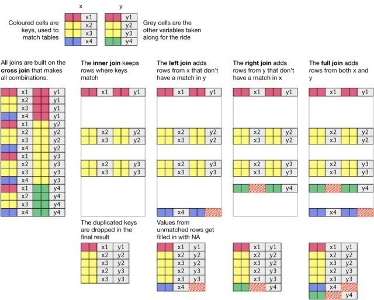
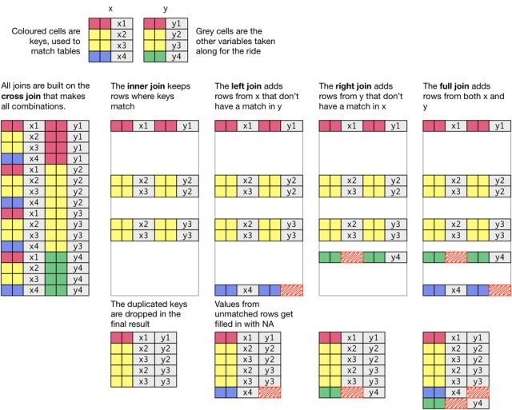
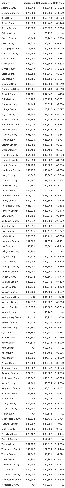

Code
library(tidyverse)
library(readxl)
library(gt)In this lab, we’ll learn some techniques for creating publication-quality summary tables while working to tell policy-relevant stories about places.
In addition to thinking about the basics of how we describe places, we will perform a basic policy analysis of the location of federal Opportunity Zones. This analysis will help illustrate how we can strategically build layers of stories. We’ll add some basic information about all census tracts so that we can describe the differences between ineligible, eligible but not designated, and eligible and designated census tracts.
This lab asks you to practice some basic data manipulation and management skills using the dplyr package.
Let’s get going…
If you have not already done so, follow this link to accept the lab Github Classroom assignment repository.
In the book R for Data Science, Hadley Wickam describes three principles for tidy data:
 Much of the data we work with in the context of basic planning and policy analysis applications already conforms to this format (or is easily transformed into this format). This makes packages like
Much of the data we work with in the context of basic planning and policy analysis applications already conforms to this format (or is easily transformed into this format). This makes packages like tidyverse particularly useful for the common types of data manipulation that we perform.
While we’ll occasionally use base r coding over the course of the semester, for the most part, we’ll rely upon the tidyverse suite to help us. Let’s explore some basic command syntax.
We’re going to work with a dataset that describes those census tracts that were designated as Opportunity Zones as part of the federal Tax Cuts and Jobs Act. These incentives are designed to spur investment in low-income and undercapitalized cities, by providing investors with tax incentives to invest capital in these locations.
The specific dataset which we’ll work with was developed by the Urban Institute, and adds to basic identification of designated census tracts some additional analysis of the characteristics of those places.
We’re already learned how to use install.packages() and library() to (respectively) install and load packages that extend R and RStudio’s functionality. As a reminder, install.packages() downloads the package from a central server and installs it on your computer. You only have to install a package once. Using library() loads that package for use in your current RStudio session. If you plan to use that package in a given analysis, you’ll need to load it. To stay organized, you should load packages at the beginning of your script or markdown document.
Note that to install the package, you need to treat the package name as a character vector "tidyverse", but when you load it in your R session, it does not need to be treated as a character vector tidyverse because it is an object that R recognizes after it is installed.
We are going to load the following packages:
tidyverse contains tools which we’ll use to subset, filter, group, and summarize our datareadxl contains tools which will help us to read Excel files into Rgt contains tools for making nicely formatted tables.library(tidyverse)
library(readxl)
library(gt)The read_xlsx() command from the readxl package will read Microsoft Excel files into data tables. Let’s start by loading the Urban Institute Opportunity Zone dataset:
Let’s read the Excel data and place it in an object called “ozs”:
ozs <- read_xlsx("04_describing/data/urbaninstitute_tractlevelozanalysis_update1242018.xlsx")You can either do a Google search for Readxl to find documentation, or you can use R’s built in documentation by typing ?readxl
As the documentation states, readxl imports excel files. Looking at the documentation, the read_excel() command will read a single excel sheet, or we can optionally select a sheet by name or number from an excel workbook with multiple sheets. In this case, the Urban Institute data is in a workbook with a single sheet, so we just need to tell R where the file is to load.
One of the first steps that we should do when we load an unfamiliar dataset is to get to know it using some basic description commands.
Let’s use the str() command to analyze the dataset’s structure:
str(ozs)tibble [42,176 × 27] (S3: tbl_df/tbl/data.frame)
$ geoid : chr [1:42176] "01001020200" "01001020300" "01001020700" "01001020802" ...
$ state : chr [1:42176] "Alabama" "Alabama" "Alabama" "Alabama" ...
$ Designated : num [1:42176] NA NA 1 NA NA NA NA 1 NA 1 ...
$ county : chr [1:42176] "Autauga County" "Autauga County" "Autauga County" "Autauga County" ...
$ Type : chr [1:42176] "Low-Income Community" "Non-LIC Contiguous" "Low-Income Community" "Non-LIC Contiguous" ...
$ dec_score : num [1:42176] 4 6 9 10 5 6 6 9 10 9 ...
$ SE_Flag : num [1:42176] NA NA NA NA NA NA NA NA NA NA ...
$ Population : num [1:42176] 2196 3136 3047 10743 2899 ...
$ medhhincome2014_tract: num [1:42176] 41107 51250 45234 61242 49567 ...
$ PovertyRate : num [1:42176] 0.24 0.107 0.19 0.153 0.151 ...
$ unemprate : num [1:42176] 0.0775 0.051 0.1407 0.0459 0.0289 ...
$ medvalue : num [1:42176] 95300 113800 93500 160400 102900 ...
$ medrent : num [1:42176] 743 817 695 1018 546 ...
$ pctown : num [1:42176] 0.628 0.703 0.711 0.823 0.83 ...
$ severerentburden : num [1:42176] 0.3269 0.3223 0.3887 0.1994 0.0994 ...
$ vacancyrate : num [1:42176] 0.0584 0.1399 0.0619 0.0609 0.2182 ...
$ pctwhitealone : num [1:42176] 0.439 0.671 0.833 0.814 0.726 ...
$ pctblackalone : num [1:42176] 0.5187 0.205 0.0922 0.1572 0.2456 ...
$ pctHispanic : num [1:42176] 0.01275 0.0727 0.0338 0.01368 0.00448 ...
$ pctAAPIalone : num [1:42176] 0.01093 0.01052 0 0.00959 0 ...
$ pctunder18 : num [1:42176] 0.218 0.224 0.249 0.27 0.245 ...
$ pctover64 : num [1:42176] 0.124 0.175 0.149 0.122 0.156 ...
$ HSorlower : num [1:42176] 0.581 0.464 0.544 0.45 0.621 ...
$ BAorhigher : num [1:42176] 0.162 0.219 0.113 0.229 0.136 ...
$ Metro : num [1:42176] 1 1 1 1 1 1 1 1 1 1 ...
$ Micro : num [1:42176] NA NA NA NA NA NA NA NA NA NA ...
$ NoCBSAType : num [1:42176] NA NA NA NA NA NA NA NA NA NA ...We get a list where each row is a variable in the dataset. We also learn more about the format of the variable (e.g. character, numeric), the number of observations, and we see examples of the first few observations.
Let’s next use summary() to get a statistical summary of each variable:
summary(ozs) geoid state Designated county
Length:42176 Length:42176 Min. :1 Length:42176
Class :character Class :character 1st Qu.:1 Class :character
Mode :character Mode :character Median :1 Mode :character
Mean :1
3rd Qu.:1
Max. :1
NA's :33414
Type dec_score SE_Flag Population
Length:42176 Min. : 1.000 Min. :1 Min. : 0
Class :character 1st Qu.: 3.000 1st Qu.:1 1st Qu.: 2752
Mode :character Median : 5.000 Median :1 Median : 3897
Mean : 5.495 Mean :1 Mean : 4147
3rd Qu.: 8.000 3rd Qu.:1 3rd Qu.: 5224
Max. :10.000 Max. :1 Max. :40616
NA's :1253 NA's :41111 NA's :112
medhhincome2014_tract PovertyRate unemprate medvalue
Min. : 2499 Min. :0.0000 Min. :0.00000 Min. : 9999
1st Qu.: 32014 1st Qu.:0.1380 1st Qu.:0.05900 1st Qu.: 85700
Median : 41094 Median :0.2055 Median :0.08734 Median : 122400
Mean : 42153 Mean :0.2331 Mean :0.10063 Mean : 165663
3rd Qu.: 50833 3rd Qu.:0.2996 3rd Qu.:0.12600 3rd Qu.: 191300
Max. :181406 Max. :1.0000 Max. :1.00000 Max. :2000001
NA's :249 NA's :141 NA's :141 NA's :1106
medrent pctown severerentburden vacancyrate
Min. : 99.0 Min. :0.0000 Min. :0.0000 Min. :0.00000
1st Qu.: 655.0 1st Qu.:0.3833 1st Qu.:0.1662 1st Qu.:0.07115
Median : 800.0 Median :0.5728 Median :0.2403 Median :0.11658
Mean : 860.9 Mean :0.5436 Mean :0.2476 Mean :0.14120
3rd Qu.:1010.0 3rd Qu.:0.7316 3rd Qu.:0.3206 3rd Qu.:0.18011
Max. :3501.0 Max. :1.0000 Max. :1.0000 Max. :1.00000
NA's :395 NA's :1033 NA's :189 NA's :167
pctwhitealone pctblackalone pctHispanic pctAAPIalone
Min. :0.0000 Min. :0.00000 Min. :0.00000 Min. :0.00000
1st Qu.:0.2040 1st Qu.:0.01072 1st Qu.:0.02602 1st Qu.:0.00000
Median :0.5614 Median :0.06656 Median :0.09304 Median :0.00883
Mean :0.5211 Mean :0.18652 Mean :0.22060 Mean :0.03806
3rd Qu.:0.8294 3rd Qu.:0.25000 3rd Qu.:0.32014 3rd Qu.:0.03533
Max. :1.0000 Max. :1.00000 Max. :1.00000 Max. :0.91144
NA's :131 NA's :131 NA's :131 NA's :131
pctunder18 pctover64 HSorlower BAorhigher
Min. :0.0000 Min. :0.00000 Min. :0.0000 Min. :0.0000
1st Qu.:0.1908 1st Qu.:0.09436 1st Qu.:0.4150 1st Qu.:0.1120
Median :0.2300 Median :0.13604 Median :0.5182 Median :0.1679
Mean :0.2295 Mean :0.14340 Mean :0.5067 Mean :0.2034
3rd Qu.:0.2719 3rd Qu.:0.18057 3rd Qu.:0.6113 3rd Qu.:0.2536
Max. :0.6468 Max. :1.00000 Max. :1.0000 Max. :1.0000
NA's :131 NA's :131 NA's :132 NA's :132
Metro Micro NoCBSAType
Min. :1 Min. :1 Min. :1
1st Qu.:1 1st Qu.:1 1st Qu.:1
Median :1 Median :1 Median :1
Mean :1 Mean :1 Mean :1
3rd Qu.:1 3rd Qu.:1 3rd Qu.:1
Max. :1 Max. :1 Max. :1
NA's :9111 NA's :37448 NA's :37793 This gives us a statistical summary including distribution and central tendency statistics, as well as information on the number of values that are NA.
A few things to note after your preliminary inspection:
NA where the tract was not designated.The dataset we’re looking at is for the entire United States. We can easily summarize characteristics of the entire dataset.
One of the characteristics tracked in the Urban Institute data is the median household income for each designated census tract. We might question whether there’s a difference in the median household income for designated and not-designated but eligible census tracts. This may help us understand something about whether the most needy tracts were selected from those that are eligible.
How would we do this? Conceptually…
NA when not. Let’s recode those NA values to equal 0 instead.NA and overwrite them with a new value of 0.There’s lots of ways we could do this:
We could use a conditional statement ifelse() to specify that if a value is NA in the Designated column we change it to 0.
ozs |> mutate(Designated = ifelse(is.na(Designated), 0, Designated))# A tibble: 42,176 × 27
geoid state Desig…¹ county Type dec_s…² SE_Flag Popul…³ medhh…⁴ Pover…⁵
<chr> <chr> <dbl> <chr> <chr> <dbl> <dbl> <dbl> <dbl> <dbl>
1 010010202… Alab… 0 Autau… Low-… 4 NA 2196 41107 0.240
2 010010203… Alab… 0 Autau… Non-… 6 NA 3136 51250 0.107
3 010010207… Alab… 1 Autau… Low-… 9 NA 3047 45234 0.190
4 010010208… Alab… 0 Autau… Non-… 10 NA 10743 61242 0.153
5 010010210… Alab… 0 Autau… Non-… 5 NA 2899 49567 0.151
6 010010211… Alab… 0 Autau… Low-… 6 NA 3247 40801 0.194
7 010030101… Alab… 0 Baldw… Non-… 6 NA 4013 45667 0.140
8 010030102… Alab… 1 Baldw… Low-… 9 NA 3067 33333 0.272
9 010030103… Alab… 0 Baldw… Non-… 10 NA 8079 47443 0.0684
10 010030104… Alab… 1 Baldw… Non-… 9 NA 4578 46696 0.148
# … with 42,166 more rows, 17 more variables: unemprate <dbl>, medvalue <dbl>,
# medrent <dbl>, pctown <dbl>, severerentburden <dbl>, vacancyrate <dbl>,
# pctwhitealone <dbl>, pctblackalone <dbl>, pctHispanic <dbl>,
# pctAAPIalone <dbl>, pctunder18 <dbl>, pctover64 <dbl>, HSorlower <dbl>,
# BAorhigher <dbl>, Metro <dbl>, Micro <dbl>, NoCBSAType <dbl>, and
# abbreviated variable names ¹Designated, ²dec_score, ³Population,
# ⁴medhhincome2014_tract, ⁵PovertyRateIn dplyr syntax, what we said here was with reference to the ozs dataset ozs |> let’s alter the dataset mutate(). Let’s alter the column named Designated mutate(Designated = ). Let’s alter the column named Designated conditionally mutate(Designated = ifelse()). If the value of Designated is equal to NA, replace it with 0, otherwise keep the value present in the Designated observation mutate(Designated = ifelse(is.na(Designated), 0, Designated)).
Looking at this ifelse() statement, you might have been tempted to write something like Designated ==NA`which will not work.is.na()is the proper logical test to return whether a value is or is notNA`.
We could use a specialized command such as replace_na() from the tidyr package to replace our NA values:
ozs |> mutate(Designated = replace_na(Designated, 0))# A tibble: 42,176 × 27
geoid state Desig…¹ county Type dec_s…² SE_Flag Popul…³ medhh…⁴ Pover…⁵
<chr> <chr> <dbl> <chr> <chr> <dbl> <dbl> <dbl> <dbl> <dbl>
1 010010202… Alab… 0 Autau… Low-… 4 NA 2196 41107 0.240
2 010010203… Alab… 0 Autau… Non-… 6 NA 3136 51250 0.107
3 010010207… Alab… 1 Autau… Low-… 9 NA 3047 45234 0.190
4 010010208… Alab… 0 Autau… Non-… 10 NA 10743 61242 0.153
5 010010210… Alab… 0 Autau… Non-… 5 NA 2899 49567 0.151
6 010010211… Alab… 0 Autau… Low-… 6 NA 3247 40801 0.194
7 010030101… Alab… 0 Baldw… Non-… 6 NA 4013 45667 0.140
8 010030102… Alab… 1 Baldw… Low-… 9 NA 3067 33333 0.272
9 010030103… Alab… 0 Baldw… Non-… 10 NA 8079 47443 0.0684
10 010030104… Alab… 1 Baldw… Non-… 9 NA 4578 46696 0.148
# … with 42,166 more rows, 17 more variables: unemprate <dbl>, medvalue <dbl>,
# medrent <dbl>, pctown <dbl>, severerentburden <dbl>, vacancyrate <dbl>,
# pctwhitealone <dbl>, pctblackalone <dbl>, pctHispanic <dbl>,
# pctAAPIalone <dbl>, pctunder18 <dbl>, pctover64 <dbl>, HSorlower <dbl>,
# BAorhigher <dbl>, Metro <dbl>, Micro <dbl>, NoCBSAType <dbl>, and
# abbreviated variable names ¹Designated, ²dec_score, ³Population,
# ⁴medhhincome2014_tract, ⁵PovertyRateNote that in replace_na() we are specifying the column we want to replace the NA value in as well as the value we want to replace NA with.
Depending upon what we wanted to do with our Designated labels, we could simultaneously deal with recoding our NA values and relabeling the values for legibility. case_when() is useful for these more complex operations:
ozs |> mutate(
Designated = case_when(
Designated == 1 ~"Designated",
is.na(Designated) ~"Not Designated"
))# A tibble: 42,176 × 27
geoid state Desig…¹ county Type dec_s…² SE_Flag Popul…³ medhh…⁴ Pover…⁵
<chr> <chr> <chr> <chr> <chr> <dbl> <dbl> <dbl> <dbl> <dbl>
1 010010202… Alab… Not De… Autau… Low-… 4 NA 2196 41107 0.240
2 010010203… Alab… Not De… Autau… Non-… 6 NA 3136 51250 0.107
3 010010207… Alab… Design… Autau… Low-… 9 NA 3047 45234 0.190
4 010010208… Alab… Not De… Autau… Non-… 10 NA 10743 61242 0.153
5 010010210… Alab… Not De… Autau… Non-… 5 NA 2899 49567 0.151
6 010010211… Alab… Not De… Autau… Low-… 6 NA 3247 40801 0.194
7 010030101… Alab… Not De… Baldw… Non-… 6 NA 4013 45667 0.140
8 010030102… Alab… Design… Baldw… Low-… 9 NA 3067 33333 0.272
9 010030103… Alab… Not De… Baldw… Non-… 10 NA 8079 47443 0.0684
10 010030104… Alab… Design… Baldw… Non-… 9 NA 4578 46696 0.148
# … with 42,166 more rows, 17 more variables: unemprate <dbl>, medvalue <dbl>,
# medrent <dbl>, pctown <dbl>, severerentburden <dbl>, vacancyrate <dbl>,
# pctwhitealone <dbl>, pctblackalone <dbl>, pctHispanic <dbl>,
# pctAAPIalone <dbl>, pctunder18 <dbl>, pctover64 <dbl>, HSorlower <dbl>,
# BAorhigher <dbl>, Metro <dbl>, Micro <dbl>, NoCBSAType <dbl>, and
# abbreviated variable names ¹Designated, ²dec_score, ³Population,
# ⁴medhhincome2014_tract, ⁵PovertyRateWhat’s going on here? case_when() allows us to conditionally recode values. We specify the condition and then what to do when that condition is met. For instance, we specify the condition Designated == 1 and then say when this condition is met, we want you to change that observation to Designated ~"Designated". We then say what to do if the value is NA - label it as “Not Designated”.
For the sake of legibility, let’s use the third strategy on our dataset:
ozs <- ozs |> mutate(
Designated = case_when(
Designated == 1 ~"Designated",
is.na(Designated) ~"Not Designated"
))And here’s what our Designated column now looks like:
| geoid | state | county | Designated |
|---|---|---|---|
| 01001020200 | Alabama | Autauga County | Not Designated |
| 01001020300 | Alabama | Autauga County | Not Designated |
| 01001020700 | Alabama | Autauga County | Designated |
| 01001020802 | Alabama | Autauga County | Not Designated |
| 01001021000 | Alabama | Autauga County | Not Designated |
| 01001021100 | Alabama | Autauga County | Not Designated |
Now that we’ve recoded our designated column, let’s do some description of the characteristics of designated and not designated places.
Let’s use a combination of group_by() and summarise() to produce a summary table showing the mean value for designated and not designated census tracts.
ozs |>
group_by(Designated) |>
summarise(Income = mean(medhhincome2014_tract))# A tibble: 2 × 2
Designated Income
<chr> <dbl>
1 Designated NA
2 Not Designated NAWe getting a table back, but why did we get NA insted of numbers here? If you’ve ever used the average mean() command in R, you probably understand what’s going on here. As a safety measure, when you average values, R will return NA if any value in that series is NA. If you’re not expecting any NA values, this is good, becuase you’ll quickly discover that there are unexpected NA values in your dataset. We might expect a few census tracts with missing income values coded as NA, so we will want to indicate na.rm = TRUE here so that R removes those NAs when calculating the mean.
ozs |>
group_by(Designated) |>
summarise(Income = mean(medhhincome2014_tract, na.rm=TRUE))# A tibble: 2 × 2
Designated Income
<chr> <dbl>
1 Designated 33345.
2 Not Designated 44446.Much better. We can see that that on average, the median household income for eligible designated census tracts is lower than that for eligible not designated census tracts. Since the Opportunity Zone legislation is designed to target distressed neighborhoods, this is a good sign that program targeting is focused on neighborhoods with greater need.
We might want to add some additional information to our summary table. One useful piece of information would be the number of census tracts that are designated or not designated.
ozs |>
group_by(Designated) |>
summarise(
Tracts = n(),
Income = mean(medhhincome2014_tract, na.rm=TRUE))# A tibble: 2 × 3
Designated Tracts Income
<chr> <int> <dbl>
1 Designated 8762 33345.
2 Not Designated 33414 44446.Within a summarise() statement, n() gives us a count of observations (rows) for each grouping. In this case, there are 8,762 census tracts designated as opportunity zones, and an additional 33,414 that were eligible based upon program criteria but not designated.
We could easily add other summaries to our summary table for this dataset, or further modify.
Now that we have some sense for how we might produce basic summaries of our data, how can we query out (filter) observations by row? How, for instance, would you modify the above code to produce the same table for counties in Illinois?
We can use a filter() statement to easily accomplish this. filter() allows us to specify one (or more) criteria for which we want to select rows from a larger dataset.
Let’s take a step back and filter our base dataset to focus on observations in Illinois.
ozs |> filter(state == "Illinois")# A tibble: 1,659 × 27
geoid state Desig…¹ county Type dec_s…² SE_Flag Popul…³ medhh…⁴ Pover…⁵
<chr> <chr> <chr> <chr> <chr> <dbl> <dbl> <dbl> <dbl> <dbl>
1 170010002… Illi… Not De… Adams… Non-… 7 NA 1937 41538 0.167
2 170010002… Illi… Not De… Adams… Low-… 1 NA 2563 40018 0.171
3 170010004… Illi… Not De… Adams… Low-… 1 NA 3403 28819 0.316
4 170010005… Illi… Not De… Adams… Low-… 1 NA 2298 32313 0.252
5 170010007… Illi… Not De… Adams… Low-… 1 NA 1259 17850 0.369
6 170010008… Illi… Design… Adams… Low-… 1 NA 2700 26012 0.344
7 170010009… Illi… Not De… Adams… Low-… 5 NA 2671 40475 0.282
8 170010101… Illi… Not De… Adams… Non-… 2 NA 4323 50156 0.0800
9 170010102… Illi… Not De… Adams… Low-… 2 NA 3436 46350 0.107
10 170010103… Illi… Not De… Adams… Non-… 8 NA 6038 59009 0.0617
# … with 1,649 more rows, 17 more variables: unemprate <dbl>, medvalue <dbl>,
# medrent <dbl>, pctown <dbl>, severerentburden <dbl>, vacancyrate <dbl>,
# pctwhitealone <dbl>, pctblackalone <dbl>, pctHispanic <dbl>,
# pctAAPIalone <dbl>, pctunder18 <dbl>, pctover64 <dbl>, HSorlower <dbl>,
# BAorhigher <dbl>, Metro <dbl>, Micro <dbl>, NoCBSAType <dbl>, and
# abbreviated variable names ¹Designated, ²dec_score, ³Population,
# ⁴medhhincome2014_tract, ⁵PovertyRateRecall that the ozs dataset has 42,176 observations (rows). We filtered the data using the criteria that the value of state is equal to “Illinois”, resulting in 1,659 observations (eligible census tracts in Illinois).
From here, we can re-use our prior code to produce a summary table that is focused on Illinois.
ozs |>
filter(state == "Illinois") |>
group_by(Designated) |>
summarise(
Tracts = n(),
Income = mean(medhhincome2014_tract, na.rm=TRUE))# A tibble: 2 × 3
Designated Tracts Income
<chr> <int> <dbl>
1 Designated 327 30504.
2 Not Designated 1332 45281.Ok - but how do we summarise by county? We just need to add that as an additional grouping criteria in our group_by() statement:
ozs |>
filter(state == "Illinois") |>
group_by(county, Designated) |>
summarise(
Tracts = n(),
Income = mean(medhhincome2014_tract, na.rm=TRUE))# A tibble: 181 × 4
# Groups: county [95]
county Designated Tracts Income
<chr> <chr> <int> <dbl>
1 Adams County Designated 1 26012
2 Adams County Not Designated 9 39614.
3 Alexander County Designated 1 21500
4 Alexander County Not Designated 3 32809
5 Bond County Designated 1 49590
6 Bond County Not Designated 1 52310
7 Boone County Designated 1 40599
8 Boone County Not Designated 2 45742
9 Bureau County Designated 1 48083
10 Bureau County Not Designated 3 60339.
# … with 171 more rowsWe are basically saying, group by both county and designated and then summarize for each.
With a few lines of code, we can produce very powerful and specific kinds of summaries for our data.
Our summary is getting more nuanced. We’ve used group_by() and summarise() to sumamrise data based upon certain characteristics. We’ve summarized in such a way where for our Illinois counties, we have two observations for each county - one that summarises values for designated tracts in that county, and one that summarises values for not designated tracts.
It might be useful for us to reshape our summary table so that there is one row for each county, with each row containing the summary value for both designated and not designated tracts.
The two commands pivot_wider() and pivot_longer() are useful for reshaping our data. pivot_wider() essentially adds columns to a dataset by transitioning content from rows to columns. pivot_longer() does the opposite - it makes a dataset longer by transitioning columns to rows.
In our case, let’s use pivot_wider() to transition our Designated and Not Designated rows into columns.
ozs |>
filter(state == "Illinois") |>
group_by(county, Designated) |>
summarise(
Tracts = n(),
Income = mean(medhhincome2014_tract, na.rm=TRUE)) |> pivot_wider(names_from = Designated, values_from = Income)# A tibble: 172 × 4
# Groups: county [95]
county Tracts Designated `Not Designated`
<chr> <int> <dbl> <dbl>
1 Adams County 1 26012 NA
2 Adams County 9 NA 39614.
3 Alexander County 1 21500 NA
4 Alexander County 3 NA 32809
5 Bond County 1 49590 52310
6 Boone County 1 40599 NA
7 Boone County 2 NA 45742
8 Bureau County 1 48083 NA
9 Bureau County 3 NA 60339.
10 Calhoun County 2 NA 55290
# … with 162 more rowsWe start with our previous summary and pass two arguments to pivot_wider().
We use names_from to specify the column in our dataset contining row values that we want to become new columns. In this case we’d expect that our Desginated column would result in the creation of two new columns - one where values are Designated and one where values are Not Designated.
We use values_from to specify the column containing the values we want in our new columns, in this case, the average of tract income.
One problem though - our tract count column is still present and these values are not reshaped. To simplify things, let’s just get rid of this count so we can see what things look like:
ozs |>
filter(state == "Illinois") |>
group_by(county, Designated) |>
summarise(
Income = mean(medhhincome2014_tract, na.rm=TRUE)) |> pivot_wider(names_from = Designated, values_from = Income)# A tibble: 95 × 3
# Groups: county [95]
county Designated `Not Designated`
<chr> <dbl> <dbl>
1 Adams County 26012 39614.
2 Alexander County 21500 32809
3 Bond County 49590 52310
4 Boone County 40599 45742
5 Bureau County 48083 60339.
6 Calhoun County NA 55290
7 Carroll County 35184 58942
8 Cass County 37679 46840.
9 Champaign County 13989. 45604.
10 Christian County 36164 45945.
# … with 85 more rowsLooking good! To make things a bit more informative, let’s also show the difference in income between designated and not designated tracts:
ozs |>
filter(state == "Illinois") |>
group_by(county, Designated) |>
summarise(
Income = mean(medhhincome2014_tract, na.rm=TRUE)) |> pivot_wider(names_from = Designated, values_from = Income) |>
mutate(Difference = Designated - `Not Designated`)# A tibble: 95 × 4
# Groups: county [95]
county Designated `Not Designated` Difference
<chr> <dbl> <dbl> <dbl>
1 Adams County 26012 39614. -13602.
2 Alexander County 21500 32809 -11309
3 Bond County 49590 52310 -2720
4 Boone County 40599 45742 -5143
5 Bureau County 48083 60339. -12256.
6 Calhoun County NA 55290 NA
7 Carroll County 35184 58942 -23758
8 Cass County 37679 46840. -9162.
9 Champaign County 13989. 45604. -31615.
10 Christian County 36164 45945. -9781.
# … with 85 more rowsOne note here - in the last mutate() statement, you see that Not Designated has backticks around it. This is because there’s a space between “Not” and “Designated” which will be treated as separate variable names. The backticks allow this to be referenced as a column. We could change the name to something like Not_Designated, but backticks will allow us to appropriately reference it as well.
Linking together the place data to the ozs data might would give us some additional context regarding opportunity zones. Remember that the opportunity zones data itemizes those census tracts that were eligible for designation with the Designated column denoting which eligible census tracts actually became opportunity zones. If we link together information for census tracts which were not eligible for designation, we could learn something about the differences between undesignated, eligible not designated, and eligible designated census tracts.
In order to link together these two datasets, we need to learn about and apply relational joins to bring these two datasets together.
Joins are methods to merge two datasets based on common attributes. It’s rare that one single dataset contains all of the information you wish to tell a story about, so it’s important to understand how joins work.
A Venn diagram of join types.
 The
The tidyverse package which we’ve installed and loaded in the past can perform seven different types of relational joins. We’ll discuss six of them briefly, but focus on four key types. Joins require us to have two tables with some type of common identifier column present in both that we can match records based on.
Let’s assume we have two data frames named x and y, and we’re trying to match a column called key in both datasets.
left_join(): A left join returns every row in x and all the columns from x and y. If a value in the key column in x doesn’t exist in y, the row will contain NA values for all the y columns. If there are multiple key matches, all the possible combinations will be returned.
right_join(): This is similar to a left join, but returns every row in y instead.
inner_join(): An inner join returns all the rows in x where there is an key match in y, and all the columns in x and y.
full_join(): A full join returns all rows and all columns from x and y. If there isn’t a match in the x key column, all x columns will return NA. (The same is true for y.)
semi_join(): A semi-join returns the rows in x where there is an key match in y. It is different than an inner join in that it only returns the columns in x and doesn’t duplicate rows if there are multiple matches in y.
anti_join(): An anti-join returns the rows in x where there is not a matching key in y. It only returns the columns in x.
You’ll notice that only the first four joins—left, right, inner, and full—merge two datasets. Those are going to be the most valuable ones to learn. Here are a couple of additional illustrations to illustrate how joins work.
  The basic general syntax for the joins is the same:
 The basic general syntax for the joins is the same:
*_join(x, y, by = "key name")
x and y are self-explanatory. The by attribute is used to name the key, or the variable that the two datasets have in common. If you’re lucky, they’ll have the same name. If you’re unlucky, you’ll have to type a bit more: by = c("name1" = "name2"), assuming “name1” is the name of the key column in x and “name2” is the name of the key column in y.
Let’s assume we have two data frames: fruit_1 that contains some characteristics about fruit, and fruit_2 that has some others. Here’s how they’re defined:
Note that the code above is just another syntax for creating tables as we did in the past.
print(fruit_1)# A tibble: 4 × 2
fruit color
<chr> <chr>
1 apple red
2 orange orange
3 banana yellow
4 lime green print(fruit_2)# A tibble: 4 × 3
fruit shape price
<chr> <chr> <dbl>
1 orange round 0.4
2 banana long 0.3
3 lime oval 0.25
4 durian spiky 8 What would be the result of a left join, right join, and inner join of fruit_1 and fruit 2?
Note the following:
The left join includes all records from fruit_1, but excludes those measures from fruit_2 where there isn’t a match in the fruit column (durian). Note that even though there’s not shape and price information for apples in fruit_2, the rows are still included, but with NA where the data would be were it present.
The right join includes all records from fruit_2 but excludes those columns from fruit_1 where there isn’t a match in the fruit column. In this case, we’re missing color information for durian fruit.
The inner join includes only those records from fruit_1 and fruit_2 where there were matches in both datasets.
The powerful thing about these joins is that they allow us to bring together data with different shapes and we can control which elements of the data are joined. Joins will become far more intuitive as you use them more.
Now that we have a sense for how joins work, let’s combine our oz and place into one larger table.
place <- read_csv("04_describing/data/place_name.csv")Rows: 73057 Columns: 5
── Column specification ────────────────────────────────────────────────────────
Delimiter: ","
chr (5): STATEFP, COUNTYFP, TRACTCE, GEOID, place_name
ℹ Use `spec()` to retrieve the full column specification for this data.
ℹ Specify the column types or set `show_col_types = FALSE` to quiet this message.place# A tibble: 73,057 × 5
STATEFP COUNTYFP TRACTCE GEOID place_name
<chr> <chr> <chr> <chr> <chr>
1 01 001 020100 01001020100 Prattville
2 01 001 020200 01001020200 Prattville
3 01 001 020300 01001020300 Prattville
4 01 001 020400 01001020400 Prattville
5 01 001 020500 01001020500 Prattville
6 01 001 020600 01001020600 Prattville
7 01 001 020700 01001020700 Prattville
8 01 001 020801 01001020801 <NA>
9 01 001 020802 01001020802 <NA>
10 01 001 020900 01001020900 <NA>
# … with 73,047 more rowsIf you take a look at both tables, you’ll note that they have a field in common called geoid. This represents a unique code that is assigned to each census tract geography. Technically, this is a FIPS (Federal Information Processing Standards) code. FIPS codes for tracts are hierarchical - the first two digits are unique to each state, the next three digits correspond to each county, and the remaining six digits are unique to each census tract in that county.
Because each tract is labelled with corresponding FIPS codes, we can join the two datasets together based upon this common field. This will become a fairly common action for you that you will repeat over the course of this class.
Next, we should think carefully about what kind of join we want. We know we have ozs data for a subset of census tracts in the U.S. and we have the place data for a more expansive set of tracts. If we want to preserve the more extensive data (including those rows that do not match up with oz- eligible tracts), what type of join should we use and how would we construct it?
Just to make sure we get this correct, I’m going to provide you with the way to complete your first join on real data. We have one more issue to deal with here to successfully join our data together. Recall that join takes three arguments - two table objects to join together and at least one common field to complete the join based on. These columns are both labelled geoid, but one is capitalized and one is not. We’ll need to tell our join function that these two columns with different names (different in that one is capitalized and one is not) should be joined to each other. We use the modified by=c("GEOID" = "geoid") to denote that GEOID in the place data should be joined to geoid in the ozs data. If the names were the same (say, both were GEOID), we could simply say by="GEOID" and this would work.
Okay, with that out of the way, let’s join our data together:
dataset<-left_join(place, ozs, by=c("GEOID" = "geoid"))Into a new object called dataset, we joined all rows from place and those records from ozs that matched. Records from place without a match in ozs will have NA where there could be data.
Take a look at the data:
View(dataset)Start by looking at the number of rows in the data - 73,057 - the same number as in the place data - we have brought in all rows from the place data and have joined to in matching rows in the ozs data. It would be useful for us to start off by knowing how many rows fall into each of our three categories - ineligible for designated, eligible and undesignated, and eligible and designated. At this point, the NA values in the Designated column reflect ineligible, the 0’s in that column reflect eligible but not designated, and the 1’s represent eligible and designated.
Use your new knowledge of dplyr’s group_by() and summarise() to create a summary table based upon the three values that we expect the Designated column to take. You’ve learned that you could define what type of summary you’d like to produce in your summarise() statement. Let’s use n() which counts the number of rows that meet each category specified in group_by():
dataset %>% group_by(Designated) %>% summarise(n())# A tibble: 3 × 2
Designated `n()`
<chr> <int>
1 Designated 7825
2 Not Designated 33391
3 <NA> 31841You should see that we have 31,841 rows (census tracts) that were ineligible for designation, an additional 33,391 that were eligible but not designated, and 7,825 that were eligible and designated. Excellent!
What might you want to do next to be able to properly label the three categories that now exist for designated?
As many of you have remarked in class, outputting “nice” tables is not R’s default. There are several packages that can help to clean up tables and make them presentable. Let’s learn how to use one such package, the gt package. Similar to how GGPlot describes a grammar of graphics for visualizations, gt similarly provides methods to shape elements of a table.
In GT, there are numerous table components which you can format as you wish:

gt’s documentation can help you become more familiar with these different components.
Let’s start off by taking the Illinois data we were previously working on and styling the table using gt:
ozs |>
filter(state == "Illinois") |>
group_by(county, Designated) |>
summarise(
Income = mean(medhhincome2014_tract, na.rm=TRUE)) |> pivot_wider(names_from = Designated, values_from = Income) |>
mutate(Difference = Designated - `Not Designated`) |>
gt()| Designated | Not Designated | Difference |
|---|---|---|
| Adams County | ||
| 26012.00 | 39614.22 | -13602.2222 |
| Alexander County | ||
| 21500.00 | 32809.00 | -11309.0000 |
| Bond County | ||
| 49590.00 | 52310.00 | -2720.0000 |
| Boone County | ||
| 40599.00 | 45742.00 | -5143.0000 |
| Bureau County | ||
| 48083.00 | 60338.67 | -12255.6667 |
| Calhoun County | ||
| NA | 55290.00 | NA |
| Carroll County | ||
| 35184.00 | 58942.00 | -23758.0000 |
| Cass County | ||
| 37679.00 | 46840.50 | -9161.5000 |
| Champaign County | ||
| 13988.83 | 45603.57 | -31614.7319 |
| Christian County | ||
| 36164.00 | 45945.43 | -9781.4286 |
| Clark County | ||
| 44460.00 | 50004.67 | -5544.6667 |
| Clay County | ||
| 39261.00 | 50853.00 | -11592.0000 |
| Clinton County | ||
| 38047.00 | 51269.00 | -13222.0000 |
| Coles County | ||
| 30682.00 | 37615.00 | -6933.0000 |
| Cook County | ||
| 29154.50 | 45208.69 | -16054.1904 |
| Crawford County | ||
| 41071.00 | 47089.67 | -6018.6667 |
| Cumberland County | ||
| 41761.00 | 43780.00 | -2019.0000 |
| De Witt County | ||
| 44181.00 | 44048.00 | 133.0000 |
| DeKalb County | ||
| 18462.67 | 55294.50 | -36831.8333 |
| Douglas County | ||
| 54444.00 | 51593.50 | 2850.5000 |
| DuPage County | ||
| 47140.00 | 60237.04 | -13097.0435 |
| Edgar County | ||
| 39306.00 | 47314.00 | -8008.0000 |
| Edwards County | ||
| 39844.00 | 51919.00 | -12075.0000 |
| Effingham County | ||
| 34028.00 | 47879.67 | -13851.6667 |
| Fayette County | ||
| 34375.00 | 44675.67 | -10300.6667 |
| Franklin County | ||
| 36469.00 | 40014.18 | -3545.1818 |
| Fulton County | ||
| 38279.00 | 45053.11 | -6774.1111 |
| Gallatin County | ||
| 38750.00 | 45074.00 | -6324.0000 |
| Greene County | ||
| 35469.00 | 43493.25 | -8024.2500 |
| Hamilton County | ||
| 54293.00 | 47627.50 | 6665.5000 |
| Hancock County | ||
| 50924.00 | 49058.00 | 1866.0000 |
| Hardin County | ||
| 34250.00 | 43860.00 | -9610.0000 |
| Henderson County | ||
| 49453.00 | 45447.50 | 4005.5000 |
| Henry County | ||
| 31845.00 | 45385.20 | -13540.2000 |
| Iroquois County | ||
| 34167.00 | 47590.80 | -13423.8000 |
| Jackson County | ||
| 16960.00 | 34503.50 | -17543.5000 |
| Jasper County | ||
| 39909.00 | NA | NA |
| Jefferson County | ||
| 18411.00 | 45013.62 | -26602.6250 |
| Jersey County | ||
| 54435.00 | 49565.25 | 4869.7500 |
| Jo Daviess County | ||
| 46731.00 | 49293.50 | -2562.5000 |
| Johnson County | ||
| 40578.00 | 38164.67 | 2413.3333 |
| Kane County | ||
| 47129.00 | 50278.10 | -3149.1000 |
| Kankakee County | ||
| 23971.50 | 48993.08 | -25021.5769 |
| Knox County | ||
| 23011.00 | 36096.67 | -13085.6667 |
| Lake County | ||
| 29174.60 | 48117.03 | -18942.4303 |
| LaSalle County | ||
| 38625.00 | 46211.08 | -7586.0769 |
| Lawrence County | ||
| 37883.00 | 42074.33 | -4191.3333 |
| Lee County | ||
| 43750.00 | 53669.33 | -9919.3333 |
| Livingston County | ||
| 33250.00 | NA | NA |
| Logan County | ||
| 41824.00 | 54024.25 | -12200.2500 |
| Macon County | ||
| 21405.20 | 40130.44 | -18725.2375 |
| Macoupin County | ||
| 48000.00 | 53369.14 | -5369.1429 |
| Madison County | ||
| 28699.80 | 49991.43 | -21291.6286 |
| Marion County | ||
| 24932.00 | 39650.29 | -14718.2857 |
| Marshall County | ||
| 49625.00 | 56748.00 | -7123.0000 |
| Mason County | ||
| 35179.00 | 46672.20 | -11493.2000 |
| Massac County | ||
| 32198.00 | 44130.00 | -11932.0000 |
| McDonough County | ||
| NaN | 44538.33 | NaN |
| McHenry County | ||
| 42972.00 | 49938.00 | -6966.0000 |
| McLean County | ||
| 11053.00 | 43965.63 | -32912.6316 |
| Mercer County | ||
| NA | 46705.00 | NA |
| Montgomery County | ||
| 44438.00 | 43921.67 | 516.3333 |
| Morgan County | ||
| 34314.00 | 38475.33 | -4161.3333 |
| Moultrie County | ||
| 40761.00 | 59008.00 | -18247.0000 |
| Ogle County | ||
| 43393.00 | 47580.00 | -4187.0000 |
| Peoria County | ||
| 20660.00 | 39899.95 | -19239.9545 |
| Perry County | ||
| 31635.00 | 47934.00 | -16299.0000 |
| Piatt County | ||
| NA | 50185.00 | NA |
| Pike County | ||
| 37837.00 | 41462.75 | -3625.7500 |
| Pope County | ||
| 32396.00 | 44375.00 | -11979.0000 |
| Pulaski County | ||
| 28884.00 | 35643.00 | -6759.0000 |
| Randolph County | ||
| 36902.00 | 48542.14 | -11640.1429 |
| Richland County | ||
| 24671.00 | 48985.75 | -24314.7500 |
| Rock Island County | ||
| 31542.50 | 40817.41 | -9274.9091 |
| Saline County | ||
| 32188.00 | 43553.62 | -11365.6250 |
| Sangamon County | ||
| 22488.80 | 40009.96 | -17521.1600 |
| Schuyler County | ||
| 52768.00 | 48594.00 | 4174.0000 |
| Scott County | ||
| NA | 47024.00 | NA |
| Shelby County | ||
| 37689.00 | 49664.25 | -11975.2500 |
| St. Clair County | ||
| 20159.71 | 32147.79 | -11988.0774 |
| Stark County | ||
| NA | 52614.00 | NA |
| Stephenson County | ||
| 26674.50 | 46470.00 | -19795.5000 |
| Tazewell County | ||
| 47367.00 | 47820.73 | -453.7273 |
| Union County | ||
| 40506.00 | 48029.75 | -7523.7500 |
| Vermilion County | ||
| 28462.33 | 39596.79 | -11134.4524 |
| Wabash County | ||
| NA | 54207.00 | NA |
| Warren County | ||
| 37185.00 | 48814.67 | -11629.6667 |
| Washington County | ||
| 46406.00 | 57554.00 | -11148.0000 |
| Wayne County | ||
| 47645.00 | 45951.25 | 1693.7500 |
| White County | ||
| 31250.00 | 48981.00 | -17731.0000 |
| Whiteside County | ||
| 45106.00 | 45458.10 | -352.1000 |
| Will County | ||
| 30419.00 | 50754.27 | -20335.2667 |
| Williamson County | ||
| 38083.00 | 42193.00 | -4110.0000 |
| Winnebago County | ||
| 20346.00 | 37655.07 | -17309.0714 |
| Woodford County | ||
| NA | 61875.00 | NA |
We simply added gt() as a final command after producing a summary table.
There’s a range of formatting options we can take advantage of to style our table. most formatting options begin with fmt_ which makes it fairly easy to search for the format type you’re looking for. Let’s format the “Designated”, “Not Designated”, and “Difference” columns as currency with no decimal places. While we’re at it, let’s rename the “county” column so “county” is capitalized:
ozs |>
filter(state == "Illinois") |>
group_by(county, Designated) |>
summarise(
Income = mean(medhhincome2014_tract, na.rm=TRUE)) |> pivot_wider(names_from = Designated, values_from = Income) |>
mutate(Difference = Designated - `Not Designated`) |>
ungroup() |>
gt() |>
fmt_currency(2:4, decimals = 0) |>
cols_label(county = "County")| County | Designated | Not Designated | Difference |
|---|---|---|---|
| Adams County | $26,012 | $39,614 | −$13,602 |
| Alexander County | $21,500 | $32,809 | −$11,309 |
| Bond County | $49,590 | $52,310 | −$2,720 |
| Boone County | $40,599 | $45,742 | −$5,143 |
| Bureau County | $48,083 | $60,339 | −$12,256 |
| Calhoun County | NA | $55,290 | NA |
| Carroll County | $35,184 | $58,942 | −$23,758 |
| Cass County | $37,679 | $46,840 | −$9,162 |
| Champaign County | $13,989 | $45,604 | −$31,615 |
| Christian County | $36,164 | $45,945 | −$9,781 |
| Clark County | $44,460 | $50,005 | −$5,545 |
| Clay County | $39,261 | $50,853 | −$11,592 |
| Clinton County | $38,047 | $51,269 | −$13,222 |
| Coles County | $30,682 | $37,615 | −$6,933 |
| Cook County | $29,155 | $45,209 | −$16,054 |
| Crawford County | $41,071 | $47,090 | −$6,019 |
| Cumberland County | $41,761 | $43,780 | −$2,019 |
| De Witt County | $44,181 | $44,048 | $133 |
| DeKalb County | $18,463 | $55,294 | −$36,832 |
| Douglas County | $54,444 | $51,594 | $2,850 |
| DuPage County | $47,140 | $60,237 | −$13,097 |
| Edgar County | $39,306 | $47,314 | −$8,008 |
| Edwards County | $39,844 | $51,919 | −$12,075 |
| Effingham County | $34,028 | $47,880 | −$13,852 |
| Fayette County | $34,375 | $44,676 | −$10,301 |
| Franklin County | $36,469 | $40,014 | −$3,545 |
| Fulton County | $38,279 | $45,053 | −$6,774 |
| Gallatin County | $38,750 | $45,074 | −$6,324 |
| Greene County | $35,469 | $43,493 | −$8,024 |
| Hamilton County | $54,293 | $47,628 | $6,666 |
| Hancock County | $50,924 | $49,058 | $1,866 |
| Hardin County | $34,250 | $43,860 | −$9,610 |
| Henderson County | $49,453 | $45,448 | $4,006 |
| Henry County | $31,845 | $45,385 | −$13,540 |
| Iroquois County | $34,167 | $47,591 | −$13,424 |
| Jackson County | $16,960 | $34,504 | −$17,544 |
| Jasper County | $39,909 | NA | NA |
| Jefferson County | $18,411 | $45,014 | −$26,603 |
| Jersey County | $54,435 | $49,565 | $4,870 |
| Jo Daviess County | $46,731 | $49,294 | −$2,562 |
| Johnson County | $40,578 | $38,165 | $2,413 |
| Kane County | $47,129 | $50,278 | −$3,149 |
| Kankakee County | $23,972 | $48,993 | −$25,022 |
| Knox County | $23,011 | $36,097 | −$13,086 |
| Lake County | $29,175 | $48,117 | −$18,942 |
| LaSalle County | $38,625 | $46,211 | −$7,586 |
| Lawrence County | $37,883 | $42,074 | −$4,191 |
| Lee County | $43,750 | $53,669 | −$9,919 |
| Livingston County | $33,250 | NA | NA |
| Logan County | $41,824 | $54,024 | −$12,200 |
| Macon County | $21,405 | $40,130 | −$18,725 |
| Macoupin County | $48,000 | $53,369 | −$5,369 |
| Madison County | $28,700 | $49,991 | −$21,292 |
| Marion County | $24,932 | $39,650 | −$14,718 |
| Marshall County | $49,625 | $56,748 | −$7,123 |
| Mason County | $35,179 | $46,672 | −$11,493 |
| Massac County | $32,198 | $44,130 | −$11,932 |
| McDonough County | NaN | $44,538 | NaN |
| McHenry County | $42,972 | $49,938 | −$6,966 |
| McLean County | $11,053 | $43,966 | −$32,913 |
| Mercer County | NA | $46,705 | NA |
| Montgomery County | $44,438 | $43,922 | $516 |
| Morgan County | $34,314 | $38,475 | −$4,161 |
| Moultrie County | $40,761 | $59,008 | −$18,247 |
| Ogle County | $43,393 | $47,580 | −$4,187 |
| Peoria County | $20,660 | $39,900 | −$19,240 |
| Perry County | $31,635 | $47,934 | −$16,299 |
| Piatt County | NA | $50,185 | NA |
| Pike County | $37,837 | $41,463 | −$3,626 |
| Pope County | $32,396 | $44,375 | −$11,979 |
| Pulaski County | $28,884 | $35,643 | −$6,759 |
| Randolph County | $36,902 | $48,542 | −$11,640 |
| Richland County | $24,671 | $48,986 | −$24,315 |
| Rock Island County | $31,542 | $40,817 | −$9,275 |
| Saline County | $32,188 | $43,554 | −$11,366 |
| Sangamon County | $22,489 | $40,010 | −$17,521 |
| Schuyler County | $52,768 | $48,594 | $4,174 |
| Scott County | NA | $47,024 | NA |
| Shelby County | $37,689 | $49,664 | −$11,975 |
| St. Clair County | $20,160 | $32,148 | −$11,988 |
| Stark County | NA | $52,614 | NA |
| Stephenson County | $26,674 | $46,470 | −$19,796 |
| Tazewell County | $47,367 | $47,821 | −$454 |
| Union County | $40,506 | $48,030 | −$7,524 |
| Vermilion County | $28,462 | $39,597 | −$11,134 |
| Wabash County | NA | $54,207 | NA |
| Warren County | $37,185 | $48,815 | −$11,630 |
| Washington County | $46,406 | $57,554 | −$11,148 |
| Wayne County | $47,645 | $45,951 | $1,694 |
| White County | $31,250 | $48,981 | −$17,731 |
| Whiteside County | $45,106 | $45,458 | −$352 |
| Will County | $30,419 | $50,754 | −$20,335 |
| Williamson County | $38,083 | $42,193 | −$4,110 |
| Winnebago County | $20,346 | $37,655 | −$17,309 |
| Woodford County | NA | $61,875 | NA |
Note that cols_label allows us to adjust column labels by supplying the variable name and then the desired name of the column.
gt provides a nice workflow example to show you step by step how you might apply formatting options to style a table. Also see the reference guide for specific formats.
We can easily use code to insert a table into our document, but what if you want to save it out as a separate file? The gtsave() command allows you to save your formatted table in a variety of formats.
ozs |>
filter(state == "Illinois") |>
group_by(county, Designated) |>
summarise(
Income = mean(medhhincome2014_tract, na.rm=TRUE)) |> pivot_wider(names_from = Designated, values_from = Income) |>
mutate(Difference = Designated - `Not Designated`) |>
ungroup() |>
gt() |>
fmt_currency(2:4, decimals = 0) |>
cols_label(county = "County") |>
gtsave("il_difference.png", "04_describing/output")And here’s the actual table that was produced:

In evaluating your lab submission, we’ll be paying attention to the following:
As you get into the lab, please feel welcome to ask us questions, and please share where you’re struggling with us and with others in the class.